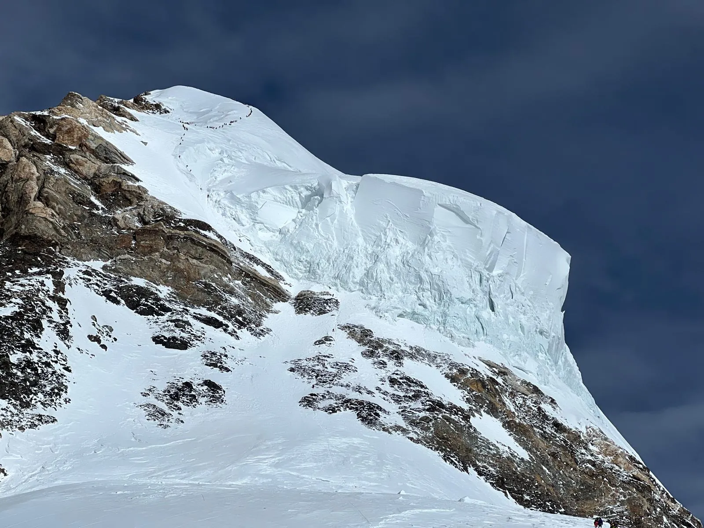

A K2 a Föld második legmagasabb hegycsúcsa. A Himalája egyik hegységében, a Karakorumban található, az Indiához tartozó Kasmír, valamint a Kínához tartozó Tibet határán. A terület jelenleg pakisztáni ellenőrzés alatt áll. Tengerszint feletti magassága 8611 m.
Neve és Felfedezése
A K2 név onnan származik, hogy 1856-ban Thomas George Montgomerie a Karakorum-hegység felmérése során ezt a hegyet regisztrálta másodikként (a többi csúcs eredeti neve ennek megfelelően K1, K3, K4 és K5 volt, de ezeket végül is a Masherbrum, a Broad Peak, a Gasherbrum II és a Gasherbrum I névvel illették); a Godwin Austen elnevezést a hegyet elsőként feltérképező Henry Haversham Godwin-Austen (1834–1923) angol geológusról kapta.
Első magyar kísérletek
Magyar hegymászók eddig négy alkalommal próbálkoztak a világ legnehezebb nyolcezresének tartott K2 megmászásával.

K2 palacknyak
2005-ben Erőss Zsolt, Mécs László, Kollár Lajos, Csollány Katalin és Markos Huba szervezett expedíciót. A kísérlet során Erőss Zsolt a Palacknyakig (Bottleneck, kb 8350 m) jutott.
2015-ben Varga Csaba és Suhajda Szilárd a 3-as táborig jutott (kb. 7400 m).
2016-ban szintén Suhajda Szilárd, immáron Klein Dáviddal párban próbálkozott. Ekkor az elért legnagyobb magasság 6900 méter volt.
Az utolsó kísérlet 2019. július 25-én sikerrel zárult. Suhajda Szilárd harmadik próbálkozására, pótlólagos oxigén használata nélkül elérte a K2 8611 m magas csúcsát. Segítője az expedíció során ismét Klein Dávid volt.